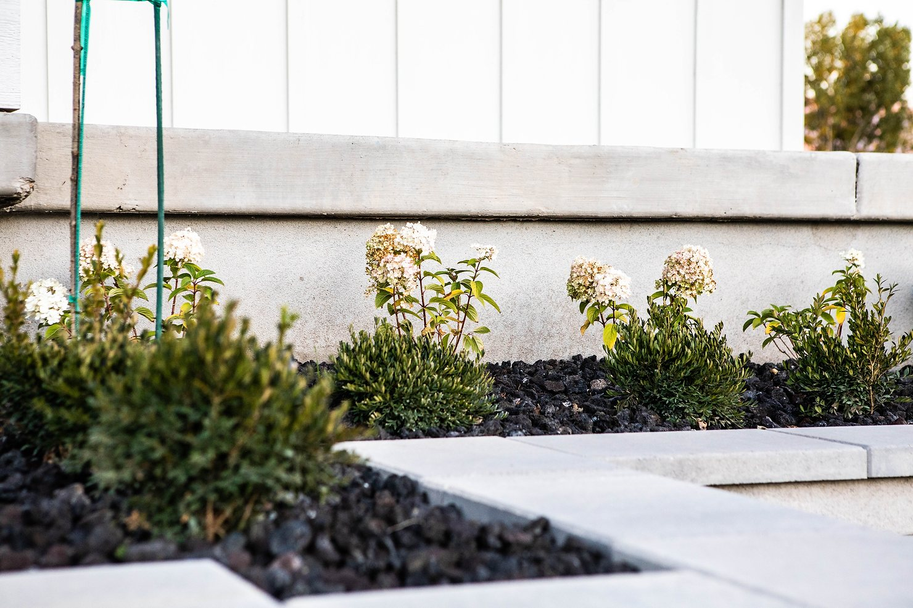

What Is The Difference Between Landscaping and Hardscaping?
Updated: May 17, 2024

Landscaping typically involves the design and installation of living elements such as plants, trees, and grass, focusing on creating aesthetically pleasing outdoor environments. Hardscaping, on the other hand, involves the design and installation of non-living elements such as pathways, patios, retaining walls, and water features, adding structure and functionality to outdoor spaces.
At Ironhills Landscaping, we elevate the concept of landscaping and hardscaping to new heights. With our passion for crafting outdoor spaces that inspire and delight, we offer a comprehensive range of services tailored to your needs and preferences.
Key Takeaways:
Purpose: At Ironhills Landscaping, landscaping and hardscaping are not just services – they're opportunities to transform outdoor spaces into breathtaking retreats.
Collaboration: We collaborate closely with our clients to understand their vision and bring it to life, ensuring that every detail reflects their unique style and preferences.
Expertise: Backed by years of experience and a passion for our craft, we bring unparalleled expertise and creativity to every project, guaranteeing exceptional results.
Vision: Our goal is not just to meet but to exceed our clients' expectations, leaving them with outdoor spaces that inspire joy and create lasting memories.
In summary, Ironhills Landscaping is more than just a landscaping company – we're creators of outdoor dreams. Whether you're envisioning a tranquil garden retreat or a functional outdoor living space, we're here to make it a reality.
Understanding Landscaping with Ironhills Landscaping
At Ironhills Landscaping, we're all about bringing outdoor dreams to life. But what exactly is landscaping? Let's break it down into simple terms:
Living Elements
Landscaping involves working with living elements like plants, trees, and grass. It's about creating a natural environment that's not only beautiful but also functional.
Aesthetics
Our landscaping projects focus on making outdoor spaces look stunning. Picture lush green lawns, colorful flower beds, and shady trees – all carefully arranged to create a picturesque setting.
Functionality
But landscaping isn't just about looks. It's also about making outdoor spaces practical and enjoyable. We design gardens where you can relax, play areas for kids, and even vegetable patches for those with a green thumb.
Customization
One size doesn't fit all in landscaping. That's why we work closely with our clients to understand their vision and preferences. Whether you want a formal garden or a wild, natural landscape, we can make it happen.
Expertise
With years of experience under our belt, we know what works best in different environments. From soil types to climate conditions, we take everything into account to ensure your landscaping thrives.
Collaboration
When you choose Ironhills Landscaping, you're not just hiring a company – you're gaining a partner in your outdoor project. We'll listen to your ideas, offer suggestions, and work together to create the perfect outdoor space for you.
DIY vs. Hiring a Professional for Landscaping
Landscaping your outdoor space can be an exciting endeavor, but the decision to tackle it yourself or hire a professional can be daunting. Let's weigh the pros and cons of each option to help you make an informed choice.
DIY Landscaping
Pros:
Cost Savings: One of the primary reasons homeowners opt for a DIY approach is to save money on labor costs.
Personal Touch: DIY projects allow you to infuse your personality and creativity into your landscape design.
Flexibility: You can work on your landscaping project at your own pace, fitting it into your schedule as needed.
Cons:
Time-Consuming: Landscaping projects can be time-consuming, especially if you lack experience or specialized equipment.
Skill Requirements: Certain landscaping tasks, such as grading or installing irrigation systems, require specialized skills and knowledge.
Risk of Errors: Without proper expertise, there's a higher risk of mistakes that could impact the functionality and aesthetics of your landscape.
Hiring a Professional
Pros:
Expertise: Professional landscapers bring years of experience and expertise to the table, ensuring high-quality results.
Time-Efficient: By entrusting your project to professionals, you save time and can enjoy a completed landscape sooner.
Access to Resources: Professionals have access to specialized tools, materials, and resources that may not be readily available to DIY enthusiasts.
Cons:
Higher Cost: Hiring a professional landscaper typically involves higher upfront costs compared to a DIY approach.
Less Control: While professionals aim to bring your vision to life, you may have less control over the finer details of the project.
Communication Challenges: Effective communication is crucial when working with a professional landscaper to ensure your expectations are met.
In the end, the decision between DIY landscaping and hiring a professional comes down to your budget, time availability, skill level, and the complexity of your project. If you're comfortable with the investment and seek professional results without the hassle, hiring a professional landscaper like Ironhills Landscaping in Provo could be the ideal choice.
Remember, whether you choose to DIY or hire a professional, the goal is to create an outdoor space that reflects your style and enhances your quality of life.
Exploring Hardscaping
Hardscaping has become increasingly popular among homeowners looking to enhance their outdoor spaces. It involves the use of hard materials such as stone, concrete, and brick to create functional and visually appealing landscapes. In this article, we'll explore the various aspects of hardscaping, including its benefits, different materials, design considerations, installation process, maintenance tips, and its environmental impact.
Benefits of Hardscaping
Enhancing outdoor aesthetics
Hardscaping elements like patios, walkways, and retaining walls can greatly enhance the visual appeal of your outdoor space. By incorporating various textures, colors, and shapes, you can create a unique and inviting environment for relaxation and entertainment.
Increasing property value
Well-designed hardscaping can significantly increase the value of your property. A beautifully landscaped yard with functional hardscaping features can attract potential buyers and command a higher resale price.
Low maintenance
Unlike traditional landscaping, which requires regular mowing, watering, and pruning, hardscaping requires minimal maintenance. Hard materials like stone and concrete are durable and long-lasting, requiring only occasional cleaning and repairs.
Maintenance Tips for Hardscaping
To keep your hardscaping looking its best, it's important to perform regular maintenance and upkeep.
Regular cleaning
Periodically sweep or pressure wash your hardscaping surfaces to remove dirt, debris, and stains. Use mild soap and water for tougher stains, and avoid harsh chemicals that could damage the materials.
Weed control
Prevent weeds from taking root in your hardscaping by applying a weed barrier or using weed-killing products as needed. Pull any weeds that do emerge promptly to prevent them from spreading.
Repairing damages
Inspect your hardscaping regularly for signs of damage such as cracks, chips, or loose stones. Repair any issues promptly to prevent further damage and maintain the integrity of your hardscaping features.
DIY vs. Hiring a Professional
When it comes to hardscaping, you have the option to tackle the project yourself or hire a professional contractor. Both options have their pros and cons, depending on your budget, skill level, and the scope of the project.
Pros and cons of DIY hardscaping
DIY hardscaping can be a cost-effective option if you have the necessary skills and equipment. However, it requires a significant time investment and may result in subpar results if not done correctly.
Benefits of hiring a professional
Hiring a professional hardscaping contractor can save you time and ensure a high-quality result. Professionals have the experience, expertise, and resources to tackle even the most complex hardscaping projects, leaving you with a stunning outdoor space to enjoy for years to come.
Landscaping Vs Hardscaping: Choose Your Outdoor Oasis with Ironhills Landscaping in Provo and Beyond Today!
Choosing between landscaping and hardscaping? Let Ironhills Landscaping ease your decision. Imagine lush greenery blending with elegant stone pathways – that's hardscaping. But don't dismiss the charm of well-tended lawns and vibrant flowers – that's landscaping. Unsure? Our team navigates the options for you. Whether you crave a low-maintenance oasis or a natural haven, we're here.
With top-notch service and attention to detail, your outdoor paradise is within reach. Contact us now and transform your outdoor space. Whether in Provo or beyond, Ironhills Landscaping is your partner for a stunning landscape. Let's make your backyard envy-worthy, starting today!
Recent Posts


If you live in Lehi, there's a good chance your yard isn't perfectly flat. Newer neighborhoods near Traverse Mountain, homes along the foothills, and lots that step down toward the street all share th